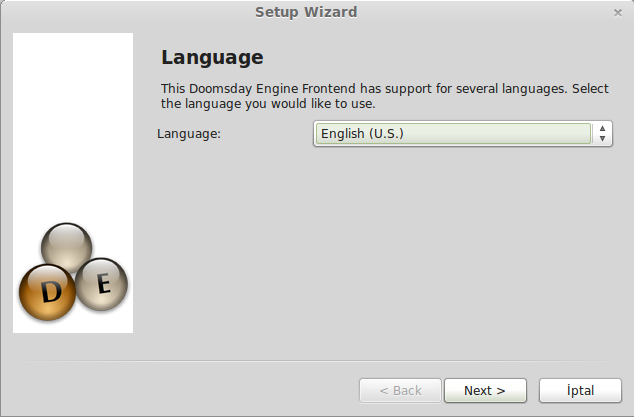
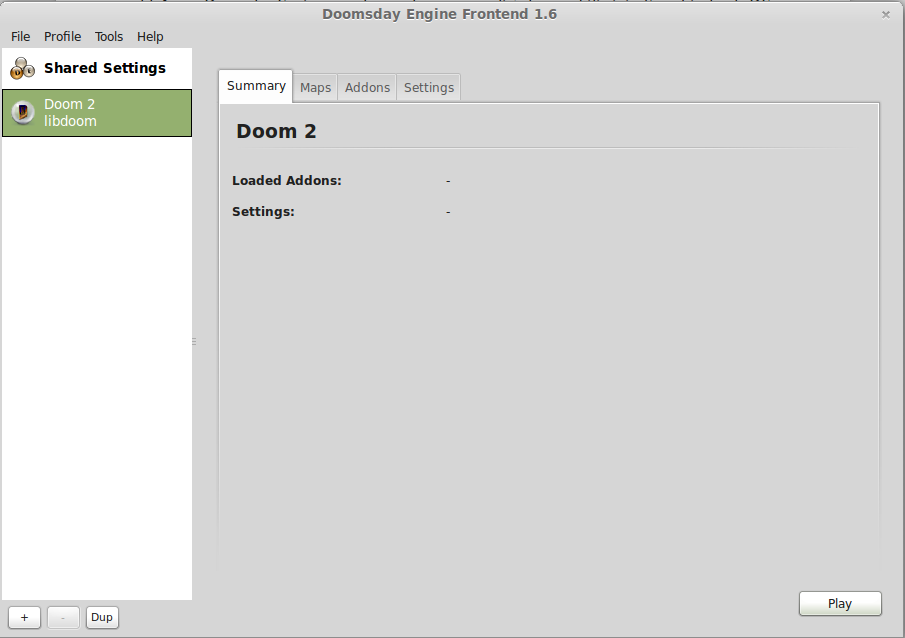
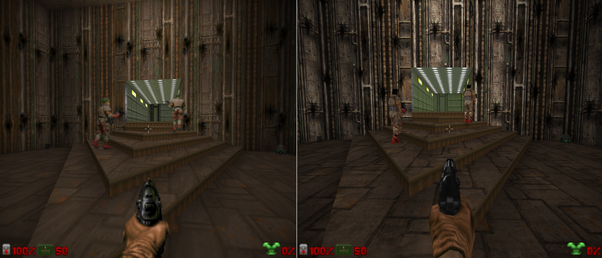

Tarih, yanılmıyorsam 90’ların ortaları. Mekân, Bursa Erkek Lisesi:
- Emre olm, süper bi bilgisayar oyunu gördüm.
- Nasıl bişey? İki kişilik mi?
- Adını bilmiyom ama şöyle bişey (El tabanca şekline getirilip, parmaklar önü gösterecek şekilde burna dayanır; du duu duuuu du du du şeklinde atmasyon bir fon müziği ile sınıfın ortasında koşturularak oyun tarif edilir -daha doğrusu edilmeye çalışılır-).
- O ney len?
- Adamın gözünden görüyon etrafı olm. Bi de silah görünüyo ortada. Önüne gelen canavarları indiriyon.
- ???
Sonrasında oyunu bilgisayarcıda ben de gördüm. Cama yapışıp izledik hep beraber oynayan bilgisayarcıyı. O an’a kadar ömrümde gördüğüm en güzel oyundu. Daha öncesinde Catacomb 3D ve Wolfenstein 3D çıkmıştı evet. Ardından gelen Quake ile tahtından devrildi evet. Ama hiçbir oyun, bir türe kendi adını veremedi. Oyun Türü: DOOM gibi.
GNU/Linux üzerinde, bu ilk FPS oyunlarından biri olan DOOM’u oynamanızı sağlayacak birkaç DOOM motoru var. 1993 yılında çıkan oyun, idTech1 motoru kullanıyordu. Sonrasında paylaşıma açıldı. Fanatikleri farklı modlar, değişik Doom türleri (rouge-like) ve uyarlamalar yaptılar. Yapılan DOOM motorlarından en pratiklerinden birisi Doomsday Engine (DE) bu yazımızın konusu [1].
DE, Doom motoru kullanan oyunları (DOOM serileri ve modları (Chocolate Doom), Heretic, Hexen serileri), modern 3D grafikleri, yüksek çözünürlük ve FPS mekanikleri (koşma, fareyle bakınma gibi) ile oynamanızı sağlayan DOOM motorudur. Motorun amacı eski oyunları, eski tadını koruyarak, ama modern grafik, çözünürlük, sunucu/istemci ağ yapısı gibi unsurları ekleyerek, yeni oyuncularla tanıştırmak. Motor bunu, kendi grafik kaplama, ses, ağ ve alt sistemlerde yaptığı değişiklikler ile, DOOM’un kademe ve karakter verilerini içeren WAD dosyalarını birleştirerek yapar. Öncelikle Doomsday motorunun özelliklerine hızlıca bakalım.
- DE, platform bağımsızdır. Windows, MacOS X, GNU/Linux altında çalışabilir.
- Özgür yazılımdır. Geliştiricileri, SourceForge proje sayfası [2] üzerinde çalışırlar. Proje, GNU/GPL 2.0 ile lisanslıdır.
- Grafik hızlandırıcı API olarak, OpenGL kullanır.
- Sistemin ses eklentilerinin desteklemesi hâlinde, 3D çevre ses desteği vardır.
- Orijinal oyunda olmayan, 16 kişilik sunucu/istemci ve TCP/IP ağ desteğine sahiptir.
- Quake konsolu vardır. Yani oyun içi yazı ile komut vereceğiniz konsola sahiptir.
- Oyunun ayarlamaları için kendisinin bir grafik kullanıcı arabirimi vardır.
- Orijinal oyunda olmayan; tuş atama, WASD kontrolü, fare ile bakınma, hızlı koşu, nişan işareti gibi pek çok modern FPS dinamiklerine sahiptir.
- Quake’in MD2 ve kendisinin DMD 3D karakter kaplama desteği (standart DOOM oyunununda sadece grafik çözünürlüğü yükseliyor. Ama ileride anlatacağım HRP ile karakterlerin, Quake karakterlerine benzediğini göreceksiniz.).
- Kaplamalarda yüksek çözünürlüklü PNG, TGA ve PCX formatlı kaplama desteği.
- Orijinal oyunun azami 35 kare/saniye limitini kaldırarak; karakter, ortam ve bina hareketlerinde yumuşaklık.
- Renklendirme, dinamik ışık ve gölgelendirme, 3D parçalanma ve sıçrama efektleri, 3D yansıma ve parlama efektleri.
- Açık alan kaplama ve SkyBox desteği.
- EAX ve A3D ses desteği.
DE’yi sitesinden [1] indirip kurmanız mümkün. Motorun kararlı sürümü 1.9.10. GNU/Linux için hem 32, hem 64 bit desteği var. Sitede Ubuntu için *.deb paketi mevcut. Sitesinde ayrıca, Debian, Gentoo, openSUSE ve RedHat için, kullanıcıların yapmış oldukları paket ya da backportlara bağlantılar var. Diğer dağıtımlar içinse, proje sayfasından [2] kaynak kodu indirip derleyebilirsiniz.
Kısa yoldan, Ubuntu kullanıcıları, anasayfadan Ubuntu logosuna tıklayarak, sistemlerine uygun olan (32 bit ya da 64 bit) *.deb paketini indirip
sudo dpkg -i /nerede/bu/dosya/dosya_adı.deb
komutu ile kurabilirler. Ya da daha kısa yoldan, Ubuntu Yazılım Merkezi’nden kurabilirler. :-) Ubuntu depolarında 1.9.10 sürümü bulunuyor.
Kaynak koddan derleme içinse, dağıtımınızın derleme araçlarının bulunduğu paketi (Ubuntu ve tabanlı dağıtımlar için build-essentials) ve qt4-qmake paketini kurmanız gerekiyor. Ardından xxf86vm, xrandr, curses, sdl1.2, libqt4-dev bağımlılıklarını kurmamız gerekiyor:
sudo apt-get install libltdl3-dev libsdl-mixer1.2-dev libsdl1.2-dev libpng-dev libopenal-dev zlib1g-dev libncurses5-dev libx11-dev libxext-dev libgl1-mesa-dev libglu1-mesa-dev libxxf86vm-dev
Ardından kaynak kodunu indirdiğimiz dizine giderek, terminale:
qmake -r ../doomsday/doomsday.pro CONFIG+=deng_notools -o Makefile
make
sudo make install
komutlarını veriyoruz. Eğer bağımlılıklar ile ilgili bir sorun olmazsa, Doomsday sisteme kurulacaktır. Sonrasından uygulamayı menüden ya da terminale “launch-doomsday” yazarak, grafik uçbirimi açmanız mümkün (ki en pratik yolu budur).
Doomsday motorunu açtığınız zaman ilk karşınıza ayar sihirbazı (Setup Wizard) gelecektir. Burası, Doom motoru kullanan oyunların genel ayarlarını yapacağımız bölümdür. Bu bölüm aslında zorunlu bir bölüm değil. Ayrıca bu sihirbazı, Doomsday menüsünden Tools -> Show Setup Wizard yoluyla istediğiniz zaman başlatabilirsiniz.

Doomsday’in 5 dil seçeneği bulunuyor. Ama aralarında Türkçe yok. Bu ekranda, eğer genel ayarlara dokunmak istemiyorsanız, “İptal” diyerek, sihirbazı kapatabilirsiniz. “Next” ile devam ederseniz, sonraki adımda, profilinize ekleyeceğiniz oyunları seçeceğiniz ekran geliyor. Buradan, oynamak istediğiniz ve elinizde WAD dosyaları olan oyunları seçebilirsiniz. Eğer WAD dosyasına sahip olduğunuz Doomsday Engine uyumlu oyunlarınız varsa, listeden seçebilirsiniz. Sonraki adımda DE, size bunların konumlarını soracaktır. Buradan “Gözat” butonuna basarak, WAD dosyalarının bulunduğu konumları Doomsday’e yükleyebilirsiniz. Eğer WAD dosyanız yoksa, bu adımda, listedeki tüm oyunların kutucuklarını temizleyin. Böylece DE, size WAD dosya konumlarını sormayacaktır.
Doomsday Engine, başta belirttiğimiz gibi, bir Doom motoru. İdTech1 motorunun kodları açıldığı zaman DOOM fanatikleri, pek çok mod ve motor çatallaması yaptılar. Yani Doomsday bir oyun değil. Oyun taban teknolojisi. FPS oyunları, iki temel kısımdan oluşur: Oyun motoru ve veri kısımları. Oyun motoru, oyunun kontrollerinden, 3 boyut hesaplamaları, perspektif (Z-ekseni ya da 3D ortamındaki adıyla Z-Buffer) ve bu perspektif üzerinde bulunan objelerin, perspektife göre etkileşimleri, oyuncunun mermilerinin hedefe gitmesi, vurması ya da ıskalaması gibi tüm hesaplamalar oyun motoru tarafından yapılır. Veri kısımları ise haritalar, karakter ve obje modellemeleri, sesler ve müziklerden oluşur. İşte DOOM ve Doomsday uyumlu oyunların veri kısmını içeren dosyalara WAD dosyası denir. WAD dosyaları olmadan Doomsday Engine, bir işe yaramaz. Ancak DOOM, Heretic ya da Hexen oyunlarının WAD dosyaları, ticari dosyalardır. Bu WAD dosyaları hakkında bilgiyi ve sınırlı (shareware) WAD dosyalarını bu adresten [3] bulabilirsiniz. Doomsday, sınırlı (shareware) WAD dosyalarını da açabilir. Tam sürümleri ise satın almanız gerekiyor.
Oyun ve WAD konumlarından sonra DE size, eklenti (addons) dizininizin yerini soracaktır. Oyunlarınızın eklenti ve yüksek çözünürlük paketlerinin (HRP) oldukları dizinleri girebilirsiniz. Dizin eklemek için alttaki “+” butonunu kullanabilirsiniz. Sonrasında ise, DE grafik arabiriminin oyun başladığında, kapanıp kapanmayacağını belirtip bitiriyoruz.
Bu genel ayarlar, DE grafik arabiriminde “Shared Settings” olarak belirir.
Sonrasında ise oyunumuzu Doomsday’e göstermemiz ve ayarlarını yapmamız gerek. Aynı ayar sihirbazındaki ayarları kullanacağız, ancak bu sefer biraz daha spesifik olacak.

DE’nin arabirimi önünüze geldiğinde, sol alttaki “+” ikonu ile listenize oyun ekleyebilirsiniz. Bu butona bastığınızda, karşınıza profil oluşturma ekranı gelecektir. Buradan oyunun adını girip, ayar kütüphanesini seçmeniz gerekecektir. DOOM serileri ve modları için “libdoom”, Hexen için “libhexen”, Heretic içinse “libheretic” seçeneğini seçmeniz gerekiyor.
Oyunun adını yazıp uygun kütüphaneyi seçtikten sonra, “Ok”e basınca, oyun listemize ekleniyor. Grafik arabirimimizin sekmelerinden oyuna has ayarları yapıyor ve özeti görebiliyoruz. İlk sekme “Summary” yani özet sekmemiz. Burada yaptığımız ayarların hangisinin aktif ya da pasif olduğu, oyun açıldığında hangi ekstra haritalar ve eklentilerin yükleneceği gibi bilgileri görebileceğimiz kısımdır.
İkinci sekmemiz ise “Maps” yani oyunumuz için ekstra haritalarımızın olduğu dizini belirttiğimiz kısımdır. Burası PWAD (patched WAD) eklenti kısmıdır aslında. PWAD, WAD dosyamız ile bütünleşik çalışacak eklenti demektir. Yani harita ve bölümler, bu kısma girer. Eğer bir harita paketimiz ve ekstra bölümlerimiz varsa, bu kısımda bunların bulunduğu dizinleri DE’ye tanımlamamız gerekiyor. DE, bu paketlerimizi otomatikman oyuna entegre edecektir.
Sonrasında ise “Addons”, yani eklenti sekmesi geliyor. PWAD dışında oynumuza ekstra özellikler katan yüksek çözünürlük, daha kaliteli ses ve müzikler gibi eklentilerin bulunduğu dizinleri tanımlayacağımız sekmedir.
Hem “Maps” hem de “Addons” sekmelerinde yapacağımız işlem aynı: Eklentilerinizin olduğu dizini belirtmek için, “My Folder” butonu ile “Shared Settings” altındaki dizin belirtme ayarına gitmek. Burada, liste kısmı altındaki “+” butonundan dizinlerimizi listeye ekliyoruz. Ancak sonrasında “Refresh” butonuna basmamız gerekiyor. “Maps” sekmesinde indirdiğimiz ekstra haritalar (map packs) ve ekstra bölümler (level packs); “Addons” sekmesindeyse çözünürlük, modellleme ve ses eklentilerimizi görebiliriz.

Eklenti filtrelemeden, uyumlu eklentiler, PWAD eklentileri, uyumlu PWAD eklentiler ve tüm eklentileri seçebiliriz. Eklenti kutucuklarını işaretleyerek de oyunda çalıştırılmasını istediğimiz eklentileri seçebiliriz.
Son olaraksa “Settings” sekmemiz geliyor. Adı üstünde ayarlarımız. Burası, oyun çalışırken DE ayarlarının nasıl uygulanacağını belirteceğimiz yer. Oyunların “Options” kısmı gibi ama oyuna uygulanacak olan DE ayarlarının yapıldığı yer. Bu sekmedeki listede, oyun, ses, görüntü, grafik ve eklenti ayarlarımız var. Buradaki oyun ayarlarımız önemli. Eğer burada bir hata yapacak olursak, oyunumuz çalışmayacaktır. Şayet oyunu başlattığınızda, kendinizi oyunun ana menüsü yerine DE konsolunda buluyorsanız, buradaki “game component” ve/veya “game mode” kısmında bir uyumsuzluk söz konusudur. “Game data files” kısmına ise oyunumuzun WAD dosyasının konumunu belirtmemiz gerekiyor. Sonrasında görüntü, görüntü efektleri, ses, giriş yöntemleri (fare ve joypad), geliştirici mesaj seviyesi ve eklenti ayarları var. Bunları açıklamayı gerek görmüyorum, hepsi oldukça açık. Ancak burada dikkat çekmek istediğim husus, ayarların işaretlenmesi. Ayarların kutucuğunu işaretlemek, o ayarı aktif hale getirmek demektir. Eğer kutucuğu temizlerseniz, o seçenek pasif olur. Ancak kutucuğu “-” işareti ile doldurursanız, o seçeneğin optimizasyonunu, DE’ye bırakmışsınız demektir. Ayarın otomatik olarak açık mı, yoksa kapalı mı olduğu da seçeneğin yanında açık gri bir yazı ile “yes” ya da “no” şeklinde belirtilir. DE’nin optimizasyonu gayet başarılı. Ayarlara bakın, ne olduğunu anlamadığınız ayarı DE’ye bırakın.
Hemen bir örneklendirme ile yazımızı bitirelim. Yukarıdaki anlatımımızdan Doomsday Engine uygulamasını kurun. En kolayı Ubuntu Yazılım Merkezi’ni kullanmak. Sonrasında terminali açarak, launch-doomsday komutunu verin. Yukarıdaki grafik arabirimi açılacak ve ayar sihirbazı başlayacak. İster ayarlarınızı yapın, ister iptal diyerek burayı kapatın.
Sonrasında buradan [4] Doom’un sınırlı olan ücretsiz WAD dosyasını indirebilirsiniz. İndirdiğiniz dosyayı bir dizine atın (mesela ~/oyun/doom gibi). Sonra DE arabiriminden, yeni oyun ekleyin. İsim olarak DOOM1 diyebilirsiniz mesela. Game library olarak “libdoom” seçeneğini seçin. “OK” butonuna basınca DOOM1 listeye eklenecektir. Listeden oyunu seçerek, “Settings” kısmına gidin. Game component seçeneğinin “libdoom” olduğundan emin olun. Game mode kısmını “DOOM Shareware” olarak ayarlayın. Game data file kısmını da sağdaki “Gözat” butonunu kullanarak, doom1.wad dosyasının bulunduğu dizini gösterin.
Ardından HRP eklentilerini kuralım. Çünkü gerçekten onlarla oyunu oynamak bambaşka bir şey. :-) Buradan [5] ve buradan [6] DE için DOOM yüksek çözünürlük paketlerini; buradan da [7] DOOM yüksek kalite ses paketini indirebilirsiniz. jdrp yüksek çözünürlük ve pk-doom-sfx ses paketleri torrent olarak bulunuyor. Bunun için bir Torrent istemcisine ihtiyacınız olacak. Bunun için Transmission uygulamasını kullanabilirsiniz.
İnen jdrp-packaged-20070404.zip dosyasının içini açarak, jdrp.box dizinini çıkarın. İstediğiniz bir dizin içine, bu dizini atın (mesela ~/oyunlar/doom/addons gibi) Aynı şekilde deng-dhtp-20121229.pk3 ve pk-doom-sfx-20100109.pk3 paket dosyalarını da aynı dizin altına atın.
Ardından DE arabirimne gidin ve “Addons” sekmesine giderek, yukarıda açıkladığımız gibi, indirdiğiniz eklentilerin bulunduğu dizini, eklenti dizini olarak DE’ye gösterin. “Refresh” dediğinizde, “Addons” listesinde eklentiler listelenecektir. Tümünün yanındaki kutucukları doldurun.
Son olaraksa sağ en altta bulunan “Play” butonun basın. DOOM başlayacaktır. :-)

Bir de sizlere HRP’nin farkını göstereyim. :-) Söylememe gerek yok sanırım ama sağdakiler orijinal, soldakiler ise HRP ile açılmış grafikler.


Ama ne yazık ki yumuşamış hareketleri ve ses kalitesindeki değişikliği buradan göstermeme imkân yok. :-)
Kaynak:
[1] http://dengine.net/
[2] http://sourceforge.net/projects/deng/
[3] http://zdoom.org/wiki/IWAD
[4] http://distro.ibiblio.org/pub/linux/distributions/slitaz/sources/packages/d/doom1.wad
[5] http://freelanzer.com/doomtextures/deng-dhtp-20121229.pk3
[6] http://files.dengine.net/tracker/torrents/jdrp-packaged-20070404.zip.torrent
[7] http://files.dengine.net/tracker/torrents/pk-doom-sfx-20100109.pk3.torrent